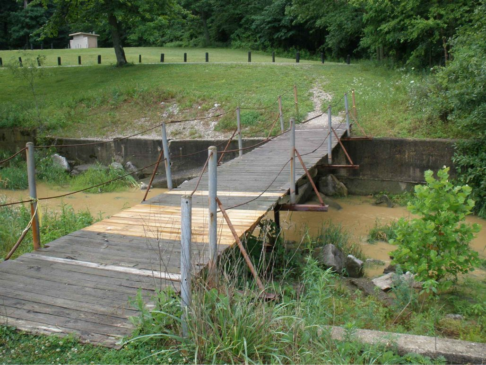
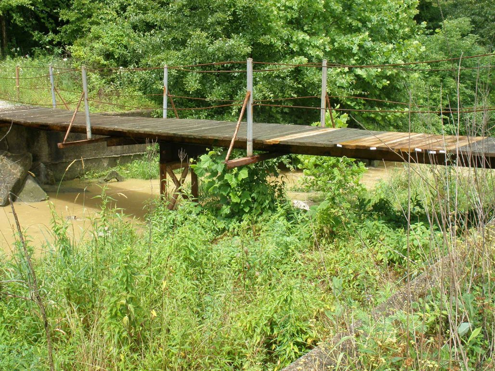
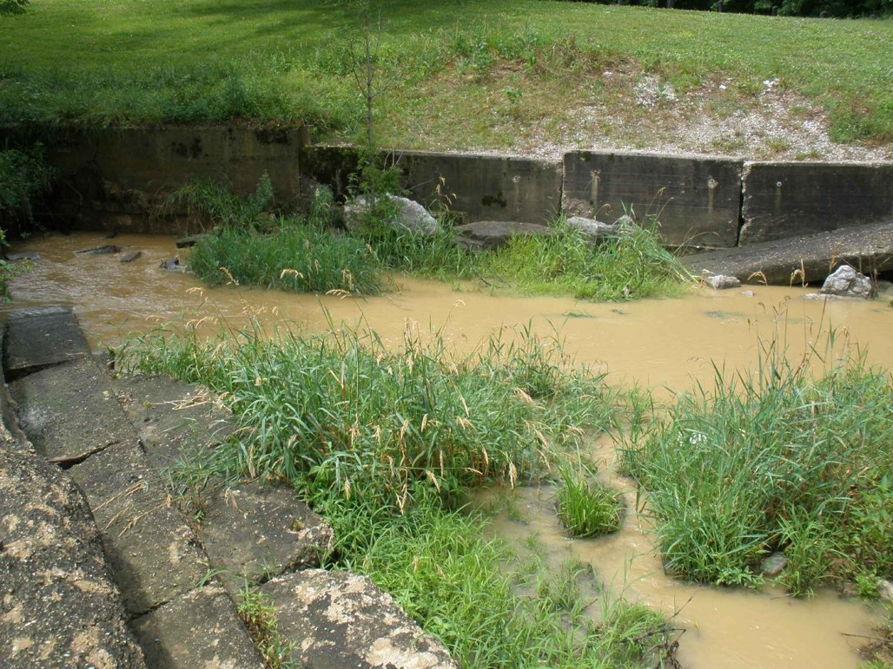

Existing-condition photos (sheet 6) – click to enlarge

Existing timber walkway and concrete spillway walls slated for demolition (pre-2013)

Existing outlet channel and timber walkway

Existing concrete walls, to be broken up and reused as the base of the new riprap channel
Design elements — 40′ semicircular concrete overflow weir (crest EL 477.0 = normal pool), 1′ side walls (EL 480→476), 2′ floor slab (EL 474→470), 3 baffle blocks and 6 end-sill blocks, 46′ pre-engineered steel truss pedestrian bridge (deck EL 482), 42″ chain-link fence, 24″ Class I riprap outlet channel, Dam No. 1 crest EL 480 (10:1 downstream slope), Dam No. 2 crest EL 495 (3:1 slopes, paved access drive), Lake 1 EL 477 / Lake 2 EL 490.4. Terrain and vegetation derived from the 2005 aerial and contours in the drawings.